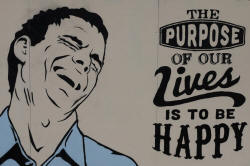

The Bridge: Clause patterns

This is not a topic that you will probably set out to teach
tomorrow and, for that reason, does not often appear as a separate
issue to be considered on initial training courses.
However, an understanding of clause structures in English is crucial
if you are to be in any position to help your learners unravel the
way sentences can be put together in the language.
The patterns we shall analyse here can act as templates for
innumerable grammatically correct sentences in English and, once
mastered, will mean that you and your learners have a sound basis
for teaching and constructing acceptable syntax.
We will only be considering normally ordered active sentences in English and not exotic passives or causatives, for example, in order to keep things simple and clear.
 |
The ingredients of clauses |
Before we can go much further, we need to get some terms straight. In any initial training course worth its while (and any secondary school for that matter), you will have encountered the fact that any sentence can be divided into two parts. For example, the sentences:
- John met a friend yesterday
- The friend was a bank manager
- The oil spilled onto the floor
- The floor was filthy
all have two parts:
- The Subject: John, The friend, The oil and The
floor respectively.
In some analyses, for good reasons, these are called the Themes of the sentences but we'll stick to the more familiar term, Subject. - The rest of the sentence is known as the Predicate. In
these examples, the predicates are:
met a friend yesterday
was a bank manager
spilled onto the floor
was filthy
In the analysis which terms the Subject the Theme, the Predicate is the Rheme but, again, we'll stick to the term Predicate.
The Predicate can be further broken down:- a friend is an Object noun phrase
- yesterday is an Adverbial of time
- was is a Verb
- a bank manager is a synonym (here) for the friend and is called the Complement of the Subject
- filthy is an attribute of the Subject and is also a Complement
 |
Try a short test to
see if you can recall this stuff. (Check the example sentence at the top of the test!) |
 |
Six patterns |
In what follows, the following abbreviations will be used and, later, some of these will be refined slightly.
- S = Subject
- V = Verb
- C = Complement
- A = Adverbial
Here they are, simplest first:
 |
Pattern 1: SV |
This is the basic pattern, parallelled in almost all languages and
quite easy to form.
Here are some examples:
John arrived
Mary spoke
John apologised
Mary relented
If you have followed The Bridge guide to verbs or other similar guides on this site, you'll recognise immediately that this pattern can only be formed with verbs which are or can be intransitive (not having an object). Verbs such as tell or find, which cannot operate without an object (expressed or implied) do not follow this pattern or the next.
 |
Pattern 2: SVA |
This is almost as simple and just means including an adverbial
to modify the verb, usually in terms of place or time (but
other options are available such as degree or manner).
Here are some examples:
John arrived late
Mary spoke angrily
John apologised immediately
Mary relented in the end
It is possible to move the adverbial, especially when it is an
adverb but, for simplicity's sake, we'll assume that a sentence such
as:
Mary immediately relented
still follows the SVA pattern (because it does).
 |
Pattern 3: SVCS |
The only issue here is what the Complement (C) can be. The
reason for the use of CS rather than simply C will become clear
soon. The dropped S stands for the
subject because that is what the complement modifies.
There are two options (with one more to come):
- An attribute as in:
He felt sorry
She appeared angry
or
They were at home - A noun which is co-referential (referring to the same
things) as the subject, as in:
He was her husband
They were friends
or
She became a witch
 |
Pattern 4: SVOCO |
Slightly more unusually in English the Complement does not apply
to the Subject of the sentence but to its Object as in, for example:
He made her angry
They elected her president
She called the idea stupid
He declared the meeting closed
Here we have the dropped O which stands for the Object because the complement refers to it and not to the subject. Some languages, incidentally, do not allow this pattern and learners from these language backgrounds may be confused about what the Complement is doing.
 |
Pattern 5: SVO |
Verbs which must be or can be transitive (taking an object)
follow this pattern.
Here are some examples:
John opened the door
Mary hit him
John said something
Mary forgave him
Next, we'll refine the concept of Object a little more precisely.
 |
Pattern : SVOIOD |
There are some verbs in English which allow two Objects but they
differ. Pattern 5 has only a Direct Object but in this
pattern, we have both an Indirect and a Direct Object. In
English, unless one uses a to + Object formulation, the
Indirect Object precedes the Direct Object. They are
distinguished above as OI and OD respectively.
It is also the case that the Indirect object is almost always
animate, very often a person.
That is by no means the case in all languages and many differ from
English or differ internally by placing pronoun objects in different
positions from noun objects.
Here are some examples:
John told her the problem
Mary gave him a piece of her mind
John offered her some flowers
Mary handed him his coat
I gave the house a clean
Only Pattern 2 above contains an Adverbial added from Pattern 1, but, because Adverbials are optional in all sentences, it is not necessary to include the possibility of inserting one or more in any of the clause patterns. We can, therefore, have:
- Pattern 3: SVCSA:
They appeared unhappy yesterday - Pattern 4: SVOCOA:
They installed her then and there as chair of the meeting - Pattern 5: SVOA:
They spent the money on a new car - Pattern 6: SVOIODA:
She read the children a story before bedtime
It is also not necessary to repeat the A for every new Adverbial
because, in theory at least, there is no limit to the number of
Adverbials we can add so we might see, for example:
She gave me the flowers last night in the
shop immediately after seeing me
which contains four adverbials represented by the single A in SVOIODA.
It is, following the simplification rule above, also not necessary
to move the A around as one can with many adverbials especially for
emphasis as in, e.g.:
Immediately after seeing me she gave me the flowers last
night in the shop
|
|
You have probably realised that
there would be a short test to see if you can identify each
of the six patterns. Click here to try it. |
|  |
Purposes |
It was noted at the outset that it is unlikely that you would plan a lesson or series of lessons around an analysis of syntax possibilities in English, although one might with more advanced students who are still struggling to construct clauses with the right sequence of phrases. Nevertheless, analysis of this type is helpful when supporting learning and correcting false syntax such as:
- Problems with adverbial placement
*I saw yesterday the film
Remember: SVOA not SVAO - Problems with Indirect and Direct Object placement (probably
the result of first-language interference)
*She read to the children a story
or
*She read a story the children
or
*She read it the children
Remember: SVOIOD not SVODOI - Problems with Object Complement placement (and
comprehension)
*They made angry the people
Remember: SVOCO not SVCOO
and so on. Whenever learners produce unnatural or plain wrong syntax, the explanation and correction often lies in the realm of how clauses and phrases are ordered in English.
If that's all clear enough to you, you can go on to the guides below (on the right). If you still feel slightly confused, try the links on the left.

| Guides in other areas | |
| Initial plus essential guides | In-service guides |
| verb essentials | verb types and clause structures |
| sentence grammar essentials | clauses |
| word order essentials | the word order map |